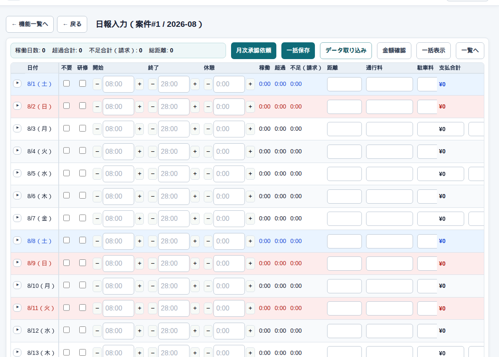
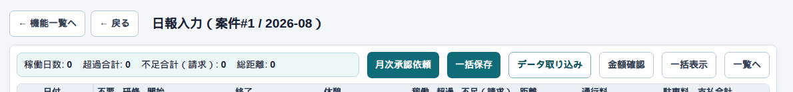
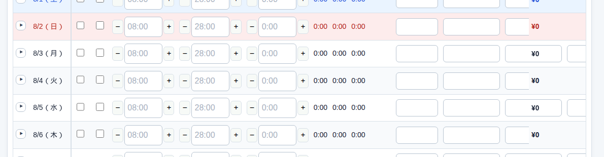

日報 → 入力
日報の入力
開くとこう見えます
一覧 で案件の「入力」を押すと、その案件の1か月が日付の表になります。タイトルは「日報入力（案件#番号 / 年月）」です。
1行が1日の作業です。開始・終了・休憩・距離・経費を入れると、稼働や超過、金額は自動で出ます。計算を組み立てる必要はありません。

事務が手書きやFAXを代わりに入れる画面です。パートナー権限があれば自分の案件も入れられます。承認する人は、月末に同じ画面で中身を見て承認します。
上のボタン

| ボタン | 押すと |
|---|---|
| 一括保存 | 見えている月をまとめて残す。スクロール位置はそのまま |
| 月次承認依頼 | 入力側が「見てください」と出す。未確認の日があると警告が出るが、続行できる |
| 月次承認 / 差戻し | 承認する人用。差戻しは指摘を残して入力側へ返す |
| 金額確認 | 計算結果を見るだけ。請求の確定や振込ではない |
| 一括表示 | 各日の詳細をまとめて開く |
| 一覧へ | 案件の一覧に戻る |
1日分の入れ方
表の左から順に、日付 → 不要 / 研修 → 開始・終了・休憩 →（自動の稼働・超過・不足）→ 距離・通行料・駐車料・交通費 → 状態、です。

| 入れるもの | 入れ方 |
|---|---|
| 不要 | その日は動かない、という印。出勤日数に入りません |
| 研修 | 研修として数える日。料金は研修の区分を使います |
| 開始 / 終了 | 08:00 のように。全角や 8.00 でも、外れたときに直ります |
| 休憩 | 1日の合計。1:00。回数に分けて登録しません |
| 距離 | 整数の km。メーターの開始・終了は使いません |
| 通行料など | 円。空欄のままでも保存できます（下書き） |
| 稼働 / 超過 / 不足 | 手で書き換えません |
| 状態 | バッジをクリックすると、その日の確認／確認解除です |
同じ日に作業を分けるときは、行の ＋ です。左の ▶ は、その日の料金やコメントを開きます。
FAXが来たとき
例：8月3日、8:00〜17:00、休憩1時間、120km、通行料1,500円
3日の行に、開始 8:00、終了 17:00、休憩 1:00、距離 120、通行料 1500 と入れます。「行保存」か上の「一括保存」を押します。稼働時間は自動です。問題なければ状態のバッジを押して、その日を確認済みにします。
日付をまたぐとき
例：20時に出て、翌朝4時まで
終了は翌日の行の 4:00 ではなく、勤務日の行に 28:00 と入れます。翌日へ分けません。入れられるのは 47:59 までです。
▶ で開くところ
普通の日は表だけで足ります。料金の種類を変える、深夜の休憩を入れる、その日だけ単価を変える、行のメモを残すときに開きます。
| 中身 | 入れるもの |
|---|---|
| 料金区分 | 料金の名前。曜日や休日から候補が出ますが、手で変えてよいです |
| 深夜時間 | 深夜帯に入った休憩など。請求と支払で深夜の時間が違うときだけ欄が分かれます |
| 契約料金 | 普段は空欄。灰色の「元:」が契約の単価です。その行だけ変えるときは数字と理由 |
| 計算結果 | 見るだけです |
| 行コメント | その日の補足 |
一時的に単価を変えても、料金マスタや他の日は変わりません。料金の種類を変えると、保存前でも金額の表示が新しい単価になります。前の種類に付けた一時単価は引き継ぎません。
確認と承認
毎日の終わりに、その日を確認します。確認すると、時間や金額に効く欄はロックされます。直すときは確認を外してから直し、もう一度確認します。備考など一部は、確認したままでも直せます。
月の終わりに「月次承認依頼」です。未確認の日が残っていても、警告のあと進められます。承認する人は内容を見て「月次承認」か「差戻し」です。部分的な承認はありません。差戻しのあとは直した日を再確認して、もう一度依頼します。
承認が終わったら、請求・支払は精算のメニューへ進みます。